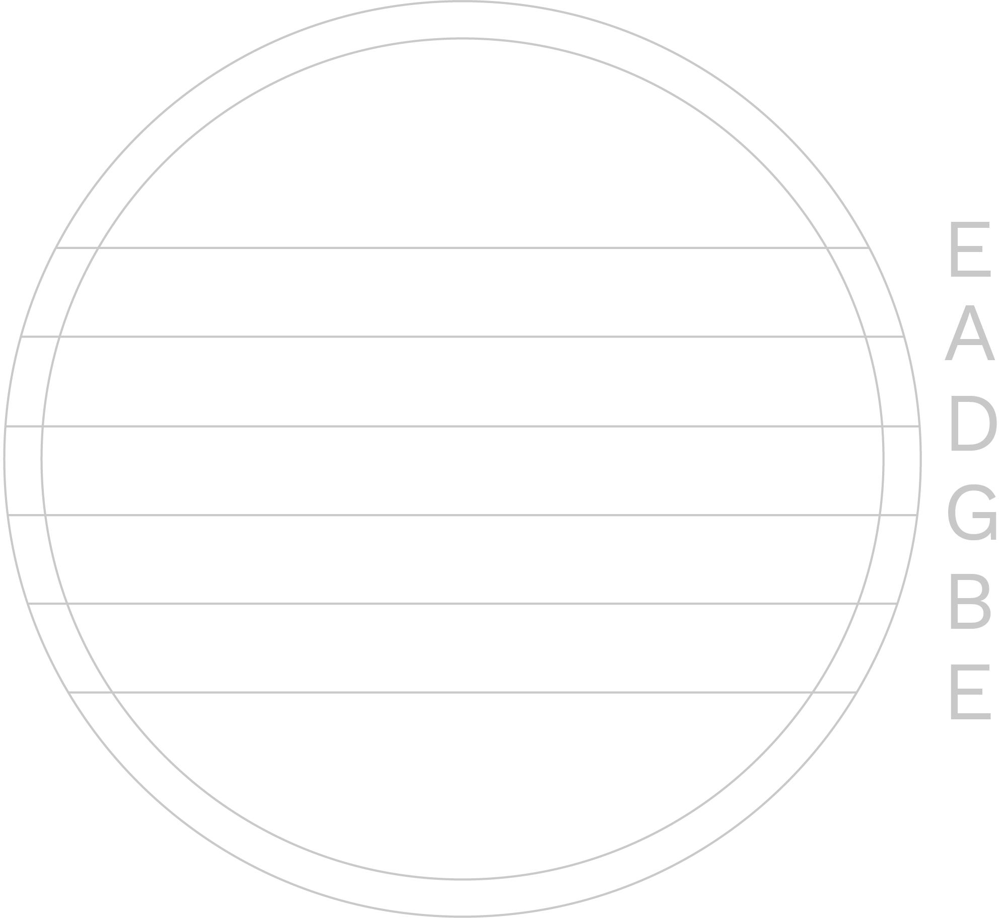
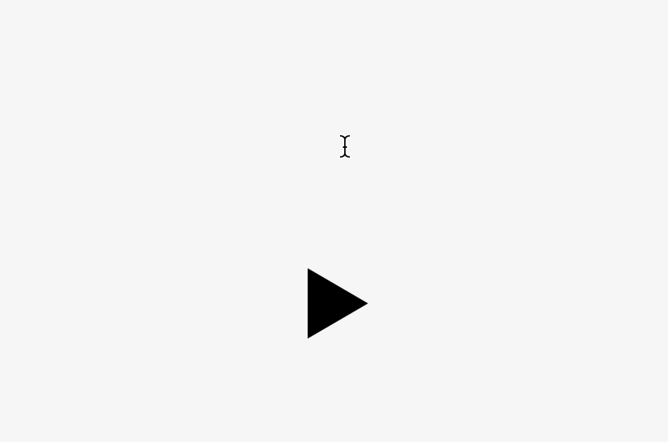
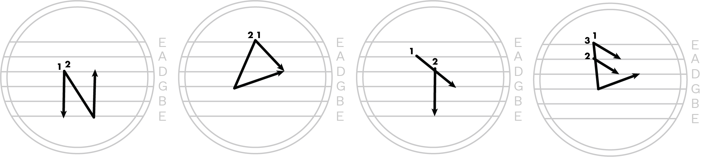

Guitar is a typeface that can be experienced in three ways: as instructions for strumming patterns, as sound from a guitar, and as a font. It was created as a project for course 4.053: Visual Communication Fundamentals.
skills
Type Design, User Experience Design
date
Fall 2019
the prompt
The creation of Guitar began with the prompt for a Visual Communications project, which was to find a context with set visual parameters that can be traced, mapped, or translated. I was to then invent a rigorous system using these parameters in order to produce an original alphabet. Another dimension of the project was user experience: the alphabet was to be displayed on a medium — poster, booklet, website — that best allows for its features to be appreciated.
the alphabet
For this project, I wanted to create an alphabet that can be experienced in multiple forms, not merely as a usable font. A source of inspiration that immediately struck was music, because it can be expressed in multiple forms, such as audio that is listened to and music notes that provide visual instructions for a musician. Conveniently, I happened to own a guitar, which served as the main inspiration from which I derived my alphabet system.
Various strumming pattern instructions
The guitar proved to be the perfect context from which I can build a multi-dimensional alphabet system, because its instrumentation involves a very interesting technique: strumming. When someone searches for instructions on how to play a piece of music on the guitar, they would most likely come across the chords that must be played. However, another important but less-documented aspect of guitar play is the way that the strings are meant to be struck. Therefore, I wanted to highlight this feature of the guitar through my project.
Using guitar strings as a visual grid, I created an alphabet system that produced the font Guitar, which can be experienced in three different ways: as instructions for strumming patterns, as sound from a guitar, and as visual font.
Visit the website for Guitar to experience it in all the three ways and learn more about the alphabet system!
the user experience
Because a key part of Guitar is its association with sound, I made sure to highlight this on my alphabet website. On the website, visitors can type a word into an input box and hear what it sounds like in Guitar. The letter being played is highlighted for distinction.
Visitors can also view the individual strumming patterns for each letter of the alphabet, as well as click on the letters to hear them.
reflection
For future directions with Guitar, I would be interested in how it would sound with varied strumming techniques, or even with plucking. One limitation that I came across with strumming was that there weren't drastic differences in sound between letters, which may be improved if other techniques were incorporated.
Creating Guitar was a very fun and inspiring experience for me. Taking a playful approach to typography and not only discovering, but inventing new ways that people can interact with type was refreshing to me and motivates me to think outside of the box for future projects as well.